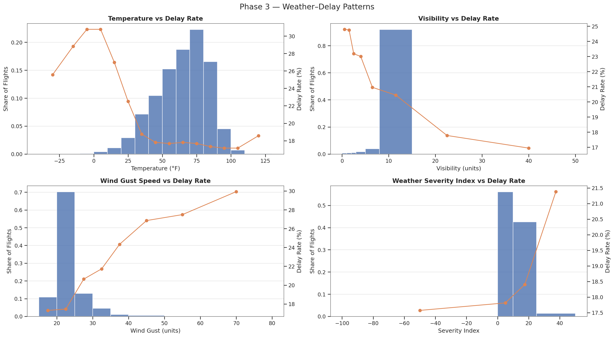

Por qué los retrasos son difíciles (y por qué sirve una alerta temprana)
Los retrasos pueden tener muchas causas a la vez: clima, congestión en aeropuertos, vuelos previos que llegan tarde u otras limitaciones operativas. Una vez que comienzan, se pueden propagar durante el día.
Quién se beneficia
- Aerolíneas/aeropuertos: planificar puertas, tripulaciones y comunicación antes.
- Viajeros: ajustar expectativas y preparar planes alternativos con tiempo.
- Operaciones: priorizar la atención en los vuelos con mayor riesgo.
Qué significa “2 horas antes”
La estimación se hace solo con información disponible antes del vuelo—similar a consultar tráfico y pronóstico antes de salir hacia el aeropuerto.
Qué usa para estimar (en palabras simples)
Flight Sentry no “adivina el futuro”. Aprende patrones del pasado y los aplica a vuelos próximos.
Ejemplos de señales
- Qué tan atrasados han estado los vuelos recientemente en el aeropuerto de origen
- Patrones por hora / día de la semana (horas pico, fines de semana)
- Condiciones del clima cerca del aeropuerto alrededor del corte (2 horas antes)
- Efecto dominó: si los aviones llegan tarde, salidas posteriores pueden atrasarse
Cómo evita “hacer trampa”
- Excluye información que solo se conoce después de que el vuelo despega.
- Alinea el clima correctamente en el tiempo, en vez de usar observaciones posteriores.
- Evalúa en períodos posteriores para simular predicciones futuras.

Qué aprendimos (a nivel general)
- Los retrasos suelen ser “sistémicos”: se acumulan por congestión y efectos en cadena.
- El clima importa, pero también los patrones operativos (hora del día y aeropuertos muy concurridos).
- Para evaluar de forma justa, hay que probar en períodos posteriores y evitar campos definidos después del hecho.
En una de las mejores configuraciones, el sistema identificó una gran parte de los vuelos que terminaron saliendo tarde en un conjunto de prueba de un año posterior (no es perfecto, pero sirve como alerta temprana).
Limitaciones (lo que esto no puede hacer)
- Se basa en patrones históricos; eventos raros pueden romper esos patrones.
- Es una estimación, no una garantía: las operaciones cambian minuto a minuto.
- Convertirlo en producto requiere datos en vivo y monitoreo continuo.
¿Quieres más detalle técnico?
Si estás evaluando esto como portafolio técnico, la versión para reclutadores resalta decisiones de ingeniería y modelado. El informe completo incluye todas las gráficas, tablas y experimentos.